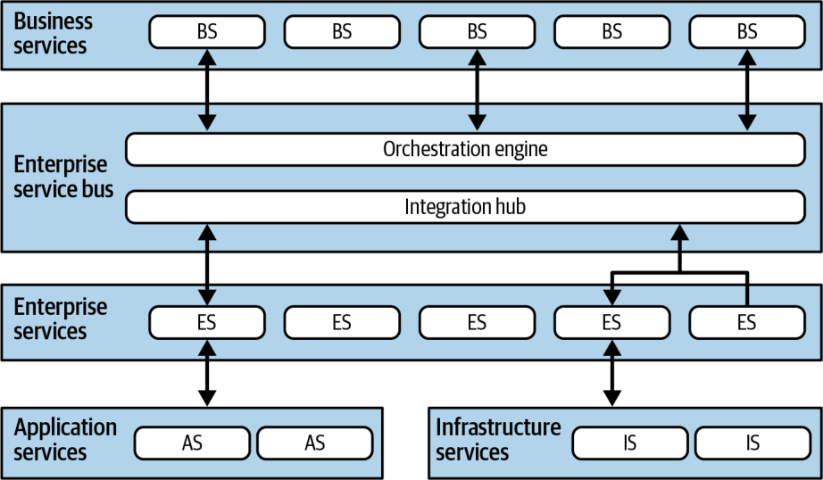

سبکهای معماری در بافتار دورهای که در آن پدید آمدهاند برای معماران معنا دارند، اما در دورههای بعد، کمابیش مانند جنبشهای هنری، اهمیت خود را از دست میدهند. معماری سرویسگرای ارکستراسیونمحور (orchestration-driven service-oriented architecture یا SOA) نمونهٔ بارز این گرایش است. نیروهای بیرونیای که اغلب بر تصمیمهای معماری اثر میگذارند، در کنار یک فلسفهٔ سازمانیِ منطقی اما در نهایت فاجعهبار، این معماری را به بیاهمیتی محکوم کردند. با این حال، این معماری نمونهٔ بسیار خوبی است از اینکه چگونه یک ایدهٔ سازمانیِ مشخص میتواند از نظر منطقی معقول به نظر برسد و در عین حال مهمترین بخشهای فرایند توسعه را مختل کند. این معماری یکی از خطرهای نادیدهگرفتنِ قانون اول ما را نشان میدهد: هرچه در معماری نرمافزار هست، یک مصالحه است.
توپولوژی
توپولوژی SOA ارکستراسیونمحور در شکل ۱۷-۱ نشان داده شده است.
همهٔ نمونههای این سبک معماری دقیقاً همین لایهها را ندارند، اما همگی از یک ایدهٔ واحد پیروی میکنند: برقراریِ طبقهبندیِ سرویسها (taxonomy of services) درون معماری، به گونهای که هر لایه مسئولیتی مشخص و خوشتعریف داشته باشد.
معماری سرویسگرا یک معماری توزیعشده است. مرزبندیِ دقیق در شکل ۱۷-۱ نشان داده نشده است، زیرا بسته به سازمان و ابزارها متفاوت است: برخی بخشهای این طبقهبندی ممکن است درون یک سرور برنامهٔ کاربردی قرار داشته باشند. SOA ارکستراسیونمحور بر یک طبقهبندیِ مشخص از سرویسها متمرکز است که مسئولیتهای فنیِ متفاوتی درون معماری دارند و نقشهایی به لایههای مشخص اختصاص یافتهاند.

شکل ۱۷-۱. توپولوژی معماری سرویسگرای ارکستراسیونمحور
ویژگیهای خاصِ سبک
SOA ارکستراسیونمحور برای معماران امروزی بیشتر اهمیت تاریخی دارد؛ درسهایی که از ساختنِ این معماریها آموخته شده، بخش مهمی از تکامل این رشته است. با این حال، معماران هنوز بخشهایی از آن را در برخی سناریوهای معماری یکپارچهسازی (integration architecture) مرتبط مییابند.
معماری سرویسگرا در اواخر دههٔ ۱۹۹۰ پدیدار شد؛ درست زمانی که شرکتهای کوچکِ گوناگون با سرعتی سرسامآور به سازمانهای بزرگ تبدیل میشدند، با شرکتهای کوچکتر ادغام میشدند و برای پاسخ به این رشد به فناوری اطلاعاتِ پیچیدهتری نیاز داشتند. اما منابع محاسباتی کمیاب، گرانبها و تجاری بودند. رایانش توزیعشده (distributed computing) تازه ممکن و ضروری شده بود و بسیاری از شرکتها به مقیاسپذیری و دیگر ویژگیهای سودمند آن نیاز داشتند.
بسیاری از محرکهای بیرونی معماران این دوره را به سوی معماریهای توزیعشدهای با قیدهای سیستمیِ چشمگیر سوق دادند. پیش از آنکه سیستمعاملهای (operating systems) آزاد برای کارهای جدی به اندازهٔ کافی قابل اطمینان به شمار آیند، سیستمعاملها گران بودند و مجوزشان به ازای هر ماشین صادر میشد. به همین ترتیب، سرورهای پایگاهدادهٔ تجاری با طرحهای صدور مجوزِ پیچدرپیچ و بیزانسی عرضه میشدند که گاه فروشندگان سرورهای برنامهٔ کاربردی (که تجمیع اتصالهای پایگاهداده را ارائه میکردند) را به واکنش و درگیری با فروشندگان پایگاهداده وامیداشت. از آنجا که منابع فراوانی در مقیاس بالا گران بودند، معماران فلسفهٔ مشترکی را پذیرفتند: بازاستفادهٔ هرچه بیشتر.
این دغدغههای فنی با دغدغههای سازمانی دربارهٔ تکرار اطلاعات و گردشکارها گره خوردند؛ به دلیل ادغامها و رشد پرتکرار، سازمانها با گوناگونی و ناسازگاری میان موجودیتهای اصلیِ کسبوکار دستوپنجه نرم میکردند. این امر اهداف SOA را جذاب میکرد. در نتیجه، معماران بازاستفاده را در همهٔ شکلهایش بهعنوان فلسفهٔ غالب در این معماری پذیرفتند که اثرات جانبیاش را در بخش «بازاستفاده… و کوپلینگ» در صفحهٔ ۳۲۰ بررسی میکنیم. این سبک معماری همچنین نشان میدهد معماران تا کجا میتوانند ایدهٔ افراز فنی را پیش ببرند؛ ایدهای که میتواند انگیزههای خوبی داشته باشد، اما وقتی به افراط کشیده شود به پیامدهای بدی میانجامد.
چرا این همه نام سرویس؟
معماران اغلب از انبوه چیزهایی در معماری نرمافزار که «سرویس» نامیده میشوند سردرگم میشوند. حتی در همین کتاب سه سبکِ «سرویسی» متفاوت را بررسی میکنیم: SOA در این فصل، میکروسرویسها در فصل ۱۸ و معماریهای مبتنی بر سرویس در فصل ۱۴. بخشی از مشکل، انعطافناپذیریِ زبان در توصیف معماریهاست. بخش دیگر در تکامل پیوستهٔ زیستبوم توسعهٔ نرمافزار نهفته است. «سرویس» نامی عام و خوشایند برای چیزی است که، خب، سرویسی ارائه میدهد، از این رو معماران تمایل دارند این نام را دوباره به کار ببرند. با تکامل سبکها، منظورمان از سرویس نیز تغییر میکند. برای نمونه، یک سرویس موجودیت (entity service) در SOA ارکستراسیونمحور تقریباً از هر نظر با سرویسی در معماری میکروسرویسها (که خود با سرویسی در معماری مبتنی بر سرویس فرق دارد) متفاوت است. هرچقدر هم آزاردهنده باشد، معماران اغلب ناچارند هنگامی که واژهٔ «سرویس» در نامی ظاهر میشود، بافتار را تفسیر کنند؛ خود این اصطلاح دچار پخش معنایی (semantic diffusion) شده است.
طبقهبندی
فلسفهٔ پیشبرندهٔ این معماری، نوع مشخصی از انتزاع و بازاستفاده در سطح سازمان (enterprise-level reuse) است. بسیاری از شرکتهای بزرگ از اینکه ناچار بودند پیوسته نرمافزار را از نو بنویسند به ستوه آمده بودند. آنها به راهبردی رسیدند که به نظر میرسید با ساختنِ یک طبقهبندیِ سختگیرانه از سرویسها، با لایههای خوشتعریف و مسئولیتهای متناظر، این مشکل را بهتدریج حل کند. هر لایه از این طبقهبندی از دو هدفِ انتزاع و بازاستفادهٔ نهایی پشتیبانی میکند.
سرویسهای کسبوکار
سرویسهای کسبوکار (business services) در بالای این SOA قرار دارند و نقطهٔ ورود فرایندهای کسبوکار را فراهم میکنند. برای نمونه، سرویسهایی مانند ExecuteTrade یا PlaceOrder دامنهٔ درستِ رفتار را برای این سرویسها نشان میدهند. یکی از محکهای (litmus test) رایج در آن زمان این بود: آیا معمار میتواند برای هر یک از این سرویسها به این پرسش پاسخ «بله» بدهد: «آیا کسبوکار ما … است؟» اگر چنین باشد، سرویس در سطح دانهبندیِ مناسب قرار دارد. اما هرچند توسعهدهنده ممکن است برای انجام فرایند کسبوکاری مانند ExecuteTrade به متدی مانند CreateCustomer نیاز داشته باشد، CreateCustomer برای یک سرویس کسبوکار در سطح انتزاعِ نادرستی قرار دارد. کسبوکار این شرکت ساختنِ مشتری نیست، بلکه برای اجرای معاملات ناچار است مشتری بسازد.
تعریفهای این سرویسها هیچ کدی ندارند؛ تنها ورودی، خروجی و گاهی اطلاعات طرحواره را در بر دارند. کاربران کسبوکار و/یا تحلیلگران این امضاهای سرویس (service signatures) را تعریف میکنند و نام «سرویسهای کسبوکار» از همینجا میآید.
سرویسهای سازمانی
سرویسهای سازمانی (enterprise services) پیادهسازیهای مشترکِ ریزدانه را در بر دارند. معمولاً تیمی از توسعهدهندگان رفتار اتمی را پیرامون حوزههای کسبوکاریِ مشخص، مانند CreateCustomer یا CalculateQuote، و موجودیتهای تراکنشی، مانند Customer، Order و Lineitem، میسازند. این سرویسهای سازمانی بلوکهای سازندهای هستند که سرویسهای کسبوکار را تشکیل میدهند و از راه موتور ارکستراسیون به هم پیوند میخورند.
تفاوتهای انتزاعیِ سرویسهای کسبوکار و سرویسهای سازمانی شایان توجه است. در حالی که سرویسهای کسبوکار کاملاً درشتدانهاند، سرویسهای سازمانی ریزدانهاند و قرار است انواع گوناگون انتزاعها، گردشکارها و موجودیتها را در بر گیرند. هدف معمار از ساختن سرویسهای سازمانی، ساختن بلوکهای سازندهٔ کاملاً کپسولهشدهای از کارکردهای کسبوکاریِ منزوی است که بتوان آنها را آزادانه در گردشکارهای کسبوکاریِ پیچیدهتر ترکیب کرد.
هرچند این هدفی ستودنی است، معماران درمییابند که نقطهٔ مطلوبِ آرمانیِ انتزاع میان همهٔ این نیروها در بهترین حالت دستنیافتنی است و به احتمال زیاد، به دلیل مصالحههای رقیبِ فراوان، ناممکن است. در نهایت، این معماری، همانند دیگر معماریهای افرازشدهٔ فنی، جداسازیِ سختگیرانهٔ مسئولیتها را دنبال میکند که از الزام بازاستفاده سرچشمه میگیرد. ایده این است که اگر توسعهدهندگان بتوانند سرویسهای سازمانیِ ریزدانه را دقیقاً در سطح دانهبندیِ درست بسازند، کسبوکار ناچار نخواهد بود آن بخش از گردشکار کسبوکار را دوباره بنویسد. بهتدریج، کسبوکار مجموعهای از داراییهای بازاستفادهپذیر (reusable assets) را در قالب سرویسهای سازمانیِ بازاستفادهپذیر گرد میآورد؛ دستکم در تئوری.
متأسفانه ماهیت پویای واقعیت و اثر تکاملیِ زیستبوم توسعهٔ نرمافزار با این تلاشها سر ناسازگاری دارند. مؤلفههای کسبوکار مانند مصالح ساختمانی نیستند که راهحلهایشان دههها دوام بیاورد. بازارها، تغییرات فناوری، رویههای مهندسی و انبوهی از عوامل دیگر، تلاشها برای تحمیل پایداری بر دنیای نرمافزار را ناکام میگذارند.
سرویسهای کاربردی
همهٔ سرویسهای این معماری به سطح دانهبندی یا بازاستفادهای همانند سرویسهای سازمانی نیاز ندارند. سرویسهای کاربردی (application services) سرویسهایی یکبارمصرف با یک پیادهسازیِ واحدند. برای نمونه، شاید یک برنامهٔ کاربردی به مکانیابی جغرافیایی (geolocation) نیاز داشته باشد، اما سازمان نخواهد زمان یا تلاشی صرف کند تا آن را به سرویسی بازاستفادهپذیر تبدیل کند. یک سرویس کاربردی، که معمولاً مالکش یک تیمِ برنامهٔ کاربردیِ واحد است، این مشکل را حل میکند.
سرویسهای زیرساختی
سرویسهای زیرساختی (infrastructure services) دغدغههای عملیاتی، مانند پایش، ثبت وقایع، احراز هویت، مجوزدهی و مانند آن را فراهم میکنند. این سرویسها معمولاً پیادهسازیهایی عینیاند و مالکشان یک تیم زیرساختِ مشترک است که از نزدیک با واحد عملیات کار میکند. فلسفهٔ معماران در ساختن این معماری حول افراز فنی میچرخد، از این رو منطقی است که سرویسهای زیرساختیِ جداگانهای بسازند.
موتور ارکستراسیون و گذرگاه پیام
موتور ارکستراسیون قلب این معماری توزیعشده را تشکیل میدهد و پیادهسازیهای سرویسهای کسبوکار را با استفاده از ارکستراسیون به هم میدوزد؛ از جمله با قابلیتهایی مانند هماهنگسازیِ تراکنشی (transactional coordination) و تبدیل پیام (message transformation). موتور ارکستراسیون رابطهٔ میان سرویسهای کسبوکار و سرویسهای سازمانی، چگونگیِ نگاشتِ آنها به یکدیگر و جای مرزهای تراکنش (transaction boundaries) را تعریف میکند. این موتور نقش یک هاب یکپارچهسازی را نیز دارد و به معماران امکان میدهد کد سفارشی را با سیستمهای نرمافزاریِ آماده و میراثی یکپارچه کنند. این ترکیب از قابلیتها کاربرد امروزیِ ابزارهایی مانند گذرگاههای سرویس سازمانی (enterprise service buses یا ESBها) را برجسته میکند. هرچند بیشتر معماران ساختنِ کل یک معماری حول ESBها را ایدهٔ بدی میدانند، این ابزارها در محیطهایی که یکپارچهسازیِ سنگینی دارند بیاندازه سودمندند. هر جا معماران ناچارند یک هاب یکپارچهسازی و یک موتور ارکستراسیون را با هم ترکیب کنند، چرا از ابزاری استفاده نکنند که از پیش هر دو را در بر دارد؟ (این به مهارت مهم دیگری اشاره دارد که معمار باید در خود پرورش دهد: اینکه کاربردهای واقعیِ ابزارها را، جدا از هیاهوی پیرامونشان، چه خوب و چه بد، تشخیص دهد.)
از آنجا که گذرگاه پیام (message bus) قلب معماری را تشکیل میدهد، قانون Conway (بخش «قانون Conway» در صفحهٔ ۱۳۹ را ببینید) بهدرستی پیشبینی میکند که تیم معماران یکپارچهسازیِ مسئولِ این موتور به یک نیروی سیاسی درون سازمان و سرانجام به یک گلوگاه دیوانسالارانه تبدیل میشود.
هرچند این رویکرد متمرکز و طبقهبندیشده ممکن است جذاب به نظر برسد، در عمل بیشتر فاجعهبار بوده است. سپردنِ رفتار تراکنشی به یک ابزار ارکستراسیون خوب به نظر میرسد، اما معماران برای یافتنِ سطح درستِ دانهبندی دستوپنجه نرم میکنند. هرچند میتوانند چند سرویس را درون یک تراکنش توزیعشده (distributed transaction) بپیچند، معماری بهطور فزایندهای پیچیده میشود. با درگیرشدنِ موجودیتها در گردشکارهای فراوان، توسعهدهندگان باید دریابند مرزهای تراکنشِ مناسب میان سرویسها کجاست. با وجود پیشبینیها و امیدهای مدیران مبنی بر اینکه سازمانها میتوانند بلوکهای سازندهٔ تراکنشی را با موفقیت بهصورت سرویسهای سازمانی بسازند، این کار در عمل دشوار از آب درآمده است.
جریان پیام
همهٔ درخواستها از موتور ارکستراسیون، یعنی جایی که منطق این معماری در آن قرار دارد، عبور میکنند. از این رو، جریان پیام حتی برای فراخوانیهای داخلی نیز از این موتور میگذرد؛ چنانکه در شکل ۱۷-۲ نشان داده شده است.
شکل ۱۷-۲. جریان پیام در معماری سرویسگرا
در شکل ۱۷-۲، سرویس سطح کسبوکارِ CreateQuote گذرگاه سرویس را فرامیخواند که گردشکار را تعریف میکند. این گردشکار شامل فراخوانیهایی به CreateCustomer و CalculateQuote است که هر یک نیز سرویسهای کاربردی را فرامیخوانند. گذرگاه سرویس نقش واسطه را برای همهٔ فراخوانیهای درون این معماری بازی میکند و هم هاب یکپارچهسازی است و هم موتور ارکستراسیون.
بازاستفاده… و کوپلینگ
یکی از اهداف اصلیِ معمارانی که نخستین بار از این معماری بهره گرفتند، بازاستفاده در سطح سرویس بود؛ یعنی توانایی ساختنِ تدریجیِ رفتار کسبوکاری که بتوانند آن را بهمرور زمان و بهصورت فزاینده بازاستفاده کنند. به آنها دستور داده شده بود فرصتهای بازاستفاده را با بیشترین جدیتِ ممکن جستوجو کنند.
برای نمونه، وضعیتی را در نظر بگیرید که در شکل ۱۷-۳ نشان داده شده است. معماری درمییابد که هر یک از شش بخش یک شرکت بیمه مفهومی از Customer را در بر دارد.
شکل ۱۷-۳. جستوجوی فرصتهای بازاستفاده در معماری سرویسگرا
بنابراین، راهبرد درستِ SOA مستلزم آن است که بخشهای Customer در یک سرویس بازاستفادهپذیر استخراج شوند و سپس به سرویسهای اصلی اجازه داده شود به سرویس متعارف (canonical) Customer ارجاع دهند. این در شکل ۱۷-۴ نشان داده شده است: در اینجا معمار همهٔ رفتارهای مربوط به مشتری را در یک سرویس Customer واحد منزوی کرده و به اهداف آشکارِ بازاستفاده دست یافته است.
شکل ۱۷-۴. ساختنِ بازنماییهای متعارف در معماری سرویسگرا
معماران تنها بهکندی به مصالحههای منفیِ این طراحی پی بردند. نخست، هنگامی که تیمی سیستمی را عمدتاً حول بازاستفاده میسازد، کوپلینگ بسیار زیادی نیز میان مؤلفهها پدید میآورد. به هر حال، بازاستفاده از راه کوپلینگ پیادهسازی میشود. برای نمونه، در شکل ۱۷-۴، تغییری در سرویس Customer به همهٔ سرویسهای دیگر موج میزند. این امر حتی تغییرات تدریجی را نیز پرریسک میکند: هر تغییر اثر موجیِ (ripple effect) بالقوه عظیمی دارد. این به نوبهٔ خود استقرارهای هماهنگشده (coordinated deployments)، آزمون کلنگر و دیگر عوامل کُندکنندهٔ بهرهوری مهندسی را لازم میکند.
اثر جانبیِ منفیِ دیگرِ تجمیع رفتار در یک جای واحد: موردِ بیمهٔ خودرو و بیمهٔ ازکارافتادگی را در شکل ۱۷-۴ در نظر بگیرید. برای پشتیبانی از یک سرویس Customer واحد، هر بخش باید همهٔ جزئیاتی را که سازمان دربارهٔ مشتریانش میداند در بر داشته باشد. بیمهٔ خودرو به گواهینامهٔ رانندگی نیاز دارد که ویژگیِ شخص است، نه خودرو. بنابراین، سرویس Customer ناچار است جزئیاتی دربارهٔ گواهینامههای رانندگی را در بر داشته باشد که بخش بیمهٔ ازکارافتادگی هیچ اهمیتی به آنها نمیدهد. با این حال، تیم بیمهٔ ازکارافتادگی ناچار است با پیچیدگیِ اضافیِ یک تعریفِ واحد از مشتری کنار بیاید. از بسیاری جهات، پافشاریِ DDD بر پرهیز از بازاستفادهٔ کلنگر از تجربههای همین نوع معماریها سرچشمه میگیرد.
شاید زیانبارترین حقیقتی که دربارهٔ SOA ارکستراسیونمحور آشکار شد، غیرعملی بودنِ ساختنِ معماریای باشد که تا این اندازه بر افراز فنی متمرکز است. هرچند این کار از منظر فلسفهٔ جداسازی و بازاستفاده معقول است، در عمل کابوس است.
برای نمونه، توسعهدهندگان معمولاً روی وظایفی مانند «افزودنِ یک سطر نشانیِ تازه به CatalogCheckout» کار میکنند. مفاهیم حوزهای مانند CatalogCheckout چنان نازک در سراسر این معماری پخش شدهاند که عملاً به گرد و غبار تبدیل شدهاند. در یک SOA، این وظیفه ممکن است دهها سرویس را در چندین ردهٔ متفاوت، بهعلاوهٔ تغییراتی در یک طرحوارهٔ پایگاهدادهٔ واحد، درگیر کند. افزون بر این، اگر سرویسهای سازمانیِ فعلی در دانهبندیِ تراکنشیِ درست تعریف نشده باشند، توسعهدهندگان یا باید طراحی خود را تغییر دهند یا برای تغییر رفتار تراکنشی، سرویس تازهای تقریباً همانند بسازند. این هم از بازاستفاده!
توپولوژیهای داده
برخلاف بسیاری از سبکهای معماری که در این کتاب بررسی میکنیم، توپولوژیهای داده در SOA ارکستراسیونمحور، با توجه به خاستگاه تاریخیِ این سبک، چندان جالب نیستند. هرچند این سبک یک معماری توزیعشده و متشکل از بخشهای فراوان است، معمولاً از یک (یا چند) پایگاهدادهٔ رابطهای استفاده میکند که در اواخر دههٔ ۱۹۹۰ رویهٔ رایج در همهٔ معماریهای توزیعشده بود. حتی تراکنشپذیری نیز معمولاً به این معماری سپرده میشد و از پایگاهدادهها دور نگه داشته میشد: گذرگاه پیام اغلب برای هر یک از موجودیتهای درون توپولوژی تعاملات تراکنشیِ اعلانیای در بر داشت که به توسعهدهندگان، معماران یا دیگران امکان میداد رفتار تراکنشی را مستقل از پایگاهداده یا حتی از بازاستفادهٔ موقعیتیِ موجودیت تعیین کنند.
معماران این دوره داده را سرزمینی بیگانه میدانستند. هرچند داده بخش ناگزیری از لولهکشی زیرساختی هم در SOA و هم در معماریهای رویدادمحور است، در آن زمان معماران با آن بیشتر بهعنوان یک نقطهٔ یکپارچهسازی رفتار میکردند تا بخشی از حوزهٔ مسئله.
واقعاً؟ تراکنشهای اعلانی؟!
بله، واقعاً. یکی از «قابلیتهای» بسیاری از سرورهای برنامهٔ کاربردی در دوران اوج SOA ارکستراسیونمحور این بود که به مدیران پیکربندی (configuration managers) اجازه میداد دامنهٔ تراکنشیِ (transactional scope) تکتکِ موجودیتها را، بسته به بافتار تراکنشیای که میخواستند در آن کار کنند، تغییر دهند. (این البته، با توجه به آن دوره و عشقش به قالبهای پیکربندیِ پرگو اما آسانتجزیه، در XML اعلان میشد.) بخشی از اعلانِ یک موجودیت (که EntityBeans نامیده میشد و نوع تخصصیای از JavaBean بود) دامنهٔ تراکنشیاش را هنگام مشارکت در گردشکارها تعیین میکرد؛ گردشکارهایی که خود معماران تراکنشی یا غیرتراکنشیبودنشان را اعلان میکردند. سرور برنامهٔ کاربردی نیز به نوبهٔ خود با پایگاهداده تعامل میکرد تا تراکنشهای پایگاهدادهای متناسب با رفتار مطلوبِ موجودیتها و/یا گردشکارها را بسازد و مدیریت کند.
این رویکرد به دو دلیل تا حد زیادی شکست خورد. نخست، اگر توسعهدهنده نداند رفتار تراکنشی در زمان اجرا چه خواهد بود، پیچیدگیِ چشمگیری به موجودیتها و وابستگیها افزوده میشود. این امر توسعهدهندگان را وادار میکند نسخههایی تقریباً یکسان از موجودیتها بسازند که تنها در دامنهٔ تراکنشیشان با هم فرق دارند. دوم، فروشندگان هرقدر هم که گذرگاههای پیامشان را پیچیده و هوشمند بسازند، پیوسته حالتهای مرزیای پدیدار میشوند که در آنها حالتهای شکستِ بیشمار مانع میشوند سیستم تراکنشها را بهطور تمیز مدیریت کند و آشفتگیهای درهمتنیدهای از ناسازگاری پدید میآورند که انسانها باید گرهشان را باز کنند. برخی قابلیتهای پیچیده و چندوجهیِ سیستمها (مانند تراکنشها) را نمیتوان بهطور تمیز در پسِ انتزاع پنهان کرد. نشتیهای فراوان در انتزاع مانع از آن میشوند که به قابلیت اطمینان دست یابد.
ملاحظات ابری
SOA ارکستراسیونمحور چندین دهه پیش از پیدایش ابر پدید آمد، از این رو هیچ ملاحظهای برای ساختنِ این معماری (در شکل اصلیاش) در ابر وجود ندارد.
با این حال، کاربرد امروزیِ این سبک آن را به یک معماری یکپارچهسازیِ خوب برای سرویسهای ابری و درونسازمانیای تبدیل میکند که باید با هم یکپارچه شوند و در گردشکارها مشارکت کنند. این سبک، که در درجهٔ نخست یک معماری یکپارچهسازی است، با سرویسها و امکانات مبتنی بر ابر بهخوبی کار میکند.
ریسکهای رایج
در پایان قرن گذشته و آغاز قرن کنونی، ریسکهای بزرگ این معماری عمدتاً به این مربوط بودند که چقدر هزینه داشت، پیادهسازیاش چقدر طول میکشید و (چه شگفتیِ تکاندهندهای!) نگهداری و بهروزرسانیِ این سیستمها چقدر دشوار است. بسیاری از این پروژهها تلاشهایی بسیار پرهزینه و چندساله بودند که تصمیمهای حیاتیشان در ردهٔ بالای سلسلهمراتب شرکت گرفته میشد. شرکتها بهجای آنکه این پروژهها را «شکستخورده» بنامند، بیشترشان آنها را به معماریهای یکپارچهسازی با مرزهای بهتر، که به ایدههای DDD نزدیکتر بودند، تبدیل کردند.
هنگامی که معماران در یک سیستم مدرن از ESB بهعنوان ابزاری برای یکپارچهسازی استفاده میکنند، بزرگترین ریسک، شیب لغزندهای است که در آن ESB بهتدریج کل معماری را در بر میگیرد. این ضدالگو SOA اتفاقی (Accidental SOA) نامیده میشود: وضعیتی که در آن معمار بهتدریج و ناخواسته، بیآنکه متوجه شود، یک SOA کاملاً ارکستراسیونمحور میسازد. معمار برای پرهیز از SOA اتفاقی باید از مرزهای کپسولهسازیِ معقول برای ارکستراسیون اطمینان یابد و به مسائلی مانند مرزهای تراکنش توجه دقیق کند.
حاکمیت
در دورهای که این معماری محبوب بود، آزمون کلنگرِ امروزی رایج نبود. تیمها بهندرت SOA را بیرون از آزمونهای رسمی در سطح تضمین کیفیت (quality assurance) میآزمودند، از این رو سازندگان ابزارها و چارچوبها توجه چندانی به تسهیلِ آزمودنِ تکتکِ بخشها نداشتند. برخی چارچوبهای آزمون برای ساختنِ ساختگیسازیها (mocks) و جانشینسازیها (stubs) برای ماشینآلات عظیم گذرگاه پیام و اجزای متحرکِ مرتبط با آن پدید آمدند، اما همواره دستوپاگیر و ناهمسان بودند.
حاکمیت نیز از همین محدودیتها رنج میبرد. ایدهٔ خودکارسازیِ حاکمیت معماری از خودکارسازیِ آزمون هم ناآشناتر بود. در این دوره، «حاکمیت» به معنای چارچوبهای سنگین، جلسهها و بازبینیهای کد بود؛ همه دستی.
با این حال، معماران هنوز درون سازمانهایی که به ترکیب ویژهٔ قابلیتهای ESBها نیاز دارند، از آنها بهصورت راهبردی استفاده میکنند. بهویژه، بسیاری از شرکتها سیستمهای میراثیای دارند که باید با سیستمهای مدرنتر تعامل کنند و اغلب نتایج را ترکیب و رفتار را تجمیع کنند؛ و همهٔ اینها کارکرد محوریِ یک ESB را توصیف میکند. در این سناریوها، توابع برازش میتوانند نقشی حیاتی در پیشگیری از «نشت» دادهها یا زمینههای محدود به بخشهایی از زیستبوم که نباید در آنها ظاهر شوند، ایفا کنند.
برای نمونه، سیستمی را در نظر بگیرید که از یک ESB برای هماهنگی میان یک بستهٔ برنامهریزی منابع سازمانی (enterprise resource planning یا ERP)، یک ابزار فروش برخط و سرویسهای مدرنترِ Accounting مبتنی بر میکروسرویس استفاده میکند. در این سناریو، سیستم باید تنها از ERP و سیستمهای فروش بخواند و در میکروسرویسهای Accounting بنویسد. معماران میتوانند نخست یک تابع برازش بسازند که اطمینان دهد همهٔ ارتباطات بهطور یکنواخت در لاگها نوشته میشوند، سپس تابع برازشی مانند تابع زیر بنویسند (که در اینجا بهصورت شبهکد آمده است):
READ logs for ERP into ERP-logs for past 24 hours
READ logs for Sales into Sales-logs for past 24 hours
FOREACH entry IN ERP-logs
IF 'operation' is 'update' and 'target' != 'accounting' THEN
raise fitness function violation
"Invalid communication between integration points"
END IF
FOREACH entry IN Sales-logs
IF 'operation' is 'update' and 'target' != 'accounting' THEN
raise fitness function violation
"Invalid communication between integration points"
END IF
این تابع برازش مدخلهای لاگِ هر دو نقطهٔ یکپارچهسازی را میخواند تا اطمینان یابد هیچ عملیات بهروزرسانیای که مقصدش سیستم Accounting نباشد انجام نمیشود.
معماران با استفاده از چنین توابع برازشی میتوانند از ابزارهایی مانند ESBها بهصورت راهبردی استفاده کنند و در عین حال پیرامون جاهایی که تیمها معمولاً از آنها سوءاستفاده میکنند، نردههای محافظ (guardrails) بسازند.
ملاحظاتِ توپولوژی تیم
همانگونه که معماران توپولوژیهای داده را برای SOA ارکستراسیونمحور در نظر نمیگرفتند، دربارهٔ توپولوژیهای تیم نیز وضع همین است؛ موضوعی که در زمان محبوبیت این سبک معماری ناشناخته بود.
در واقع، طبقهبندیِ سختگیرانهٔ این سبک خود یک ضدالگوی ارتباطی (communication antipattern) است که معماران را به تدوین اصول توپولوژیهای تیم رهنمون شد. هدف این معماری جداسازیِ افراطیِ مسئولیتها، همراه با جداسازیِ متناظرِ اعضای تیم است. در میان شرکتهایی که این معماری را پذیرفتند، بهراستی کمیاب بود که کسی که سرویسهای کسبوکار را میساخت با کسی که سرویسهای سازمانی را میساخت گپ بزند. از آنها انتظار میرفت از راه مصنوعات فنی، مانند قراردادها و رابطها، با هم ارتباط برقرار کنند. سطح انتزاع در این سبک لایههای یکپارچهسازیِ فراوانی پدید میآورد که هر یک را تیمهای متفاوتی پیادهسازی میکنند و برای ارتباط از ابزارهای تیکتینگِ (ticketing tools) سازمانی استفاده میکنند. بهآسانی میتوان دید چرا توسعهدهندگان ساختنِ قابلیتها در این سبک را زمانبر مییابند.
ویژگیهای سبک
بسیاری از معیارهایی که اکنون برای ارزیابی سبکهای معماری به کار میبریم، در زمان محبوبیت SOA ارکستراسیونمحور اولویت نداشتند. جنبش نرمافزاری Agile تازه آغاز شده بود و هنوز به سازمانهای بزرگی که احتمالاً از این معماری استفاده میکردند راه نیافته بود.
در جدول رتبهبندیِ ویژگیها در شکل ۱۷-۵، رتبهٔ یکستاره یعنی آن ویژگی معماریِ مشخص در این معماری بهخوبی پشتیبانی نمیشود، در حالی که رتبهٔ پنجستاره یعنی آن ویژگی معماری یکی از قویترین جنبههای این سبک است. تعریفِ ویژگیهایی که در این کارنامه آمدهاند در فصل ۴ یافت میشود.
SOA شاید افرازشدهترین معماری همهمنظوره (general-purpose) از نظر فنی باشد که تاکنون آزموده شده است! در واقع، واکنش منفی به عیبهای این ساختار به معماریهای مدرنتری مانند میکروسرویسها انجامید. SOA، هرچند یک معماری توزیعشده است، به دو دلیل تنها یک کوانتوم دارد. نخست، معمولاً از یک پایگاهدادهٔ واحد یا تنها چند پایگاهداده استفاده میکند و بدین ترتیب نقاط کوپلینگی میان دغدغههای بسیار گوناگون پدید میآورد. دوم، و مهمتر، موتور ارکستراسیون نقش یک نقطهٔ کوپلینگِ غولآسا را دارد: هیچ بخشی از معماری نمیتواند ویژگیهایی متفاوت با میانجیای داشته باشد که همهٔ رفتارها را ارکستره میکند. بدین ترتیب، این معماری موفق میشود عیبهای هر دو معماریِ تکپارچه و توزیعشده را یکجا گرد آورد.
شکل ۱۷-۵. رتبهبندیِ ویژگیهای معماری سرویسگرا
اهداف مهندسیِ مدرن مانند استقرارپذیری و آزمونپذیری در این معماری امتیازی فاجعهبار میگیرند؛ هم به این دلیل که بهخوبی پشتیبانی نمیشوند و هم به این دلیل که در زمان پیدایش این معماری اهدافی مهم (یا حتی آرمانی) نبودند.
این معماری از برخی اهداف، مانند کشسانی و مقیاسپذیری، با وجود دشواریهای پیادهسازیشان، پشتیبانی میکند. فروشندگان ابزار تلاش عظیمی کردند تا این سیستمها را با ساختنِ تکثیر نشست (session replication) میان سرورهای برنامهٔ کاربردی و تکنیکهای دیگر مقیاسپذیر کنند. اما از آنجا که این یک معماری توزیعشده است، کارایی هرگز نقطهٔ قوت آن نبوده است، زیرا هر درخواست کسبوکاری در بخش بسیار بزرگی از معماری پخش میشود.
به دلیل همهٔ این عوامل، رابطهٔ سادگی و هزینه وارونهٔ رابطهای است که بیشتر معماران ترجیح میدهند. SOA ارکستراسیونمحور نقطهٔ عطف مهمی بود، زیرا محدودیتهای عملیِ افراز فنی و دشواریِ تراکنشهای توزیعشده در دنیای واقعی را به معماران آموخت.
نمونهها و موارد کاربرد
نمونههای اصلیِ این معماری در اواخر دههٔ ۱۹۹۰ و اوایل دههٔ ۲۰۰۰ در بسیاری از سازمانهای بزرگ وجود داشتند. این معماریها بهتدریج جای خود را به معماریهای توزیعشدهٔ چابکتر و حوزهمحور، مانند میکروسرویسها، دادهاند. حتی سازمانهای بزرگ نیز دریافتهاند که تغییر ناگزیر است و نرمافزار ایستا نیست و باید همگام با نیروهای بازار و قابلیتهای تازه تغییر کند.
معماران معماریهای SOA ارکستراسیونمحور را ساختند تا بکوشند در سازمانهای بزرگ به بازاستفادهٔ اثربخش دست یابند، اما سرانجام دریافتند طبقهبندیِ سختگیرانه و پرجزئیاتشان پیادهسازیِ تغییرات و بهروزرسانیهای رایج را چقدر دشوار میکند. برای نمونه، یک تغییر حوزهایِ رایج ممکن است بهروزرسانیِ جزئیات یک موجودیت واحد باشد. در روزی خوششانس، توسعهدهندگان ممکن است برای انجام این کار تنها ناچار به تغییر مؤلفههایی در لایهٔ سرویسهای سازمانی باشند. اما در روزی بد (روزی که معماران سازمانی و/یا ذینفعان کسبوکار این نوع تغییر را پیشبینی نکرده بودند)، توسعهدهندگان ممکن است ناچار شوند چهار یا پنج لایه از معماری را بهروز کنند و در هر یک تغییراتی با کوپلینگ بالا بدهند. معمارانی که در این سبک کار میکنند از شنیدن واژهٔ «تغییر» وحشت دارند، زیرا تحلیل عمیقی میطلبد و دامنهٔ کار بسیار متغیر است.
چنانکه در بخش «حاکمیت» در صفحهٔ ۳۲۴ اشاره کردیم، معماران هنوز از بلوکهای سازندهٔ SOA ارکستراسیونمحور (مانند ESB) استفاده میکنند، بهویژه برای معماریهای یکپارچهسازی. برای نمونه، یک ESB هم یک هاب یکپارچهسازی (برای تسهیلِ تبدیل ارتباط، پروتکل و قرارداد) و هم یک موتور ارکستراسیون (برای اینکه معماران بتوانند گردشکارهایی میان نقاط پایانیِ یکپارچهسازیِ گوناگون بسازند) را در بر دارد. از آنجا که SOA ارکستراسیونمحور لایههای غیرمستقیمسازیِ فراوانی دارد، به معماران امکان میدهد سرویسهای سازمانی را، در میان امکانات دیگر، بهصورت نقاط یکپارچهسازی، نرمافزار آماده (package software) یا کد سفارشی (bespoke code) پیادهسازی کنند؛ چنانکه در شکل ۱۷-۶ نشان داده شده است.
درخواستهای کلاینت از گذرگاه پیام استفاده میکنند تا تعیین کنند کدام سرویسهای سازمانی را فراخوانند، به چه ترتیبی آنها را فراخوانند و چه اطلاعاتی را تجمیع کنند. سرویسهای سازمانی نیز به نوبهٔ خود از راه APIها با کد سفارشی، سیستمهای قدیمی، نرمافزارهای آماده و مانند آن ارتباط برقرار میکنند.
SOA ارکستراسیونمحور نوآوری جالبی در شیوهٔ رسیدگیِ معماران به مسائل یکپارچهسازی در مقیاس بزرگ و در چارچوب قیدهای زیستبومشان به شمار میآید. برای نمونه، از آنجا که در زمان محبوبیت این معماری بیشتر سازمانها از سیستمعاملهای آزاد استفاده نمیکردند، معماریهای جایگزینی مانند میکروسرویسها بهطرز ناممکنی پرهزینه بودند. معماران باید از رویکردهای گذشته درس بگیرند. میتوانیم بخشهایی را که هنوز معنا دارند همچنان به کار ببریم و در عین حال درسهای اینکه چه چیزی شکست خورد و چرا را درونی کنیم.
شکل ۱۷-۶. لایههای انتزاع در این سبک معماری انعطافپذیری در پیادهسازی را ممکن میکنند